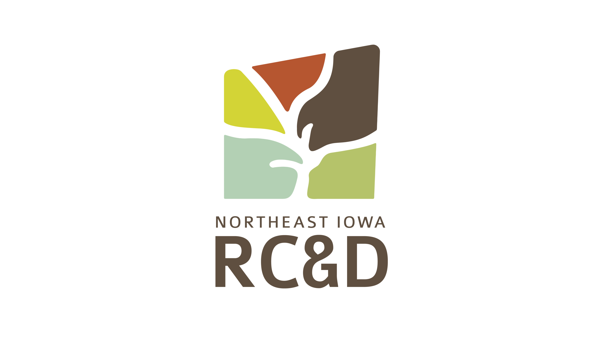
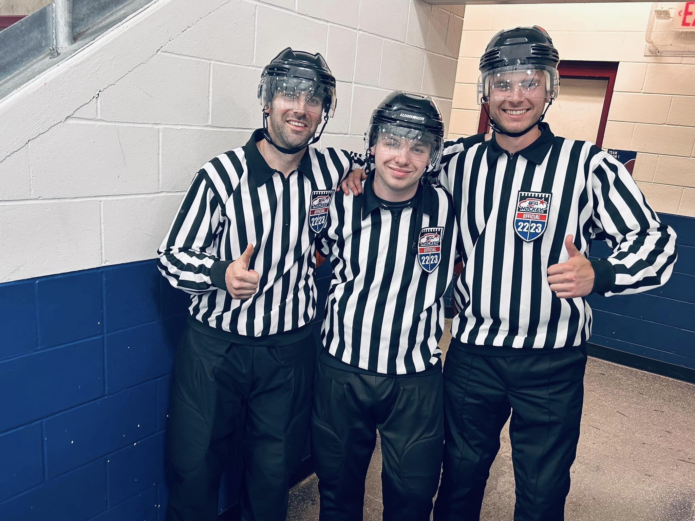

About Me
 My name is Hans Larson. I grew up in Stillwater, Minnesota. I enjoy fishing, disc golf, video games, and sports. Growing up, I played football, hockey, and soccer.
After high school, I studied at Luther College, a liberal arts school in Decorah, Iowa, where I originally majored in computer science.
I later switched to a data science major with a focus in business management and marketing, and graduated with a bachelor’s degree in data science, and minors in computer science and visual communication in May of 2020.
In college, I became interested in Geographic Information Systems (GIS) while working on a project for an introductory data science class. This eventually led me to taking a full-semester course in GIS and accepting an internship position at Northeast Iowa Resource Conservation & Development (NEIA RC&D) during the January term of 2019.
Here, I worked mainly on a Cover Crop Identification Project and an ArcScene 3D presentation of well depths, as well as helped create some data visualizations for one of the RC&D’s presentations that month.
My name is Hans Larson. I grew up in Stillwater, Minnesota. I enjoy fishing, disc golf, video games, and sports. Growing up, I played football, hockey, and soccer.
After high school, I studied at Luther College, a liberal arts school in Decorah, Iowa, where I originally majored in computer science.
I later switched to a data science major with a focus in business management and marketing, and graduated with a bachelor’s degree in data science, and minors in computer science and visual communication in May of 2020.
In college, I became interested in Geographic Information Systems (GIS) while working on a project for an introductory data science class. This eventually led me to taking a full-semester course in GIS and accepting an internship position at Northeast Iowa Resource Conservation & Development (NEIA RC&D) during the January term of 2019.
Here, I worked mainly on a Cover Crop Identification Project and an ArcScene 3D presentation of well depths, as well as helped create some data visualizations for one of the RC&D’s presentations that month.
After I graduated in May of 2020, I accepted a position as a geospatial analyst at Continental Mapping, a defense contractor located in Sun Prairie, WI. Here, I created over 100 maps of airfields around the world using ArcGIS. Although I enjoyed this position, I was contacted by Northeast Iowa RC&D after five months of working at Continental Mapping about an open position as a Natural Resource Analyst & Marketing Tech, and I accepted an interview. During the interview with NEIA RC&D, they explained that they needed someone with GIS experience to help with natural resource projects in the spring and summer, but they also needed this person to help with more creative projects in the fall and winter. They knew me from my internship in 2019, and also knew that I had a diverse education background, studying computer science, data science, and graphic design. I accepted the position, moved back to Decorah, and began working at NEIA RC&D in January of 2021. My job at NEIA RC&D has been very unique, and I have been blessed to have this opportunity. Not many recent graduates get an opportunity to work at a job where they get to try so many new things and discover what careers they like and dislike. At this job, I have been able to work on GIS projects, marketing research, organizing and facilitating public meetings, graphic design, website creation & design, animation, film, grant writing, and I even get my remote pilot’s license for commercial drone projects!
 I also became an ice hockey official in the fall of 2020. I have been officiating ever since then, and have started to take it very seriously, working the NAPHL showcase in Blaine, MN with olympic official Kendall Hanley, and getting accepted into the 2023 Central District Exposure Camp in Ames, IA, working games and learning from olympic and professional officials Stephen Reneau and Rocco Stachowiak. This, combined with personal reasons, are why I have recently decided to move back to the Twin Cities, where I will be closer to family, friends, and hockey.